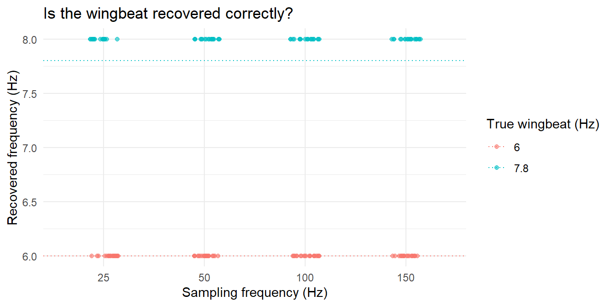
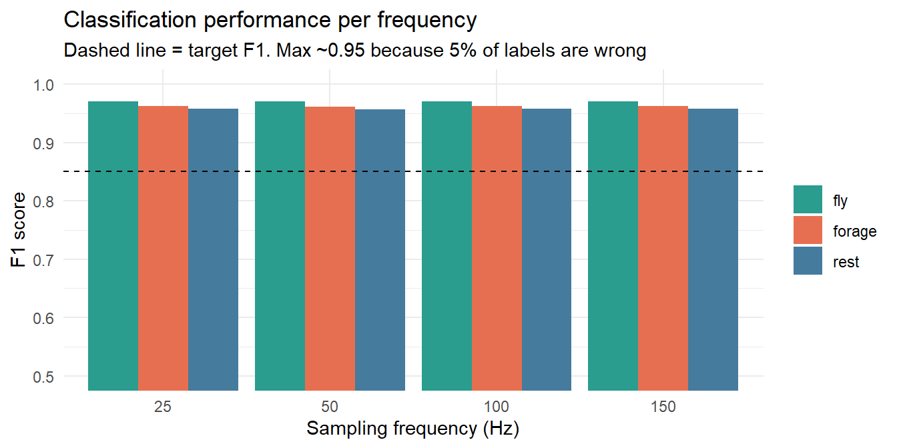
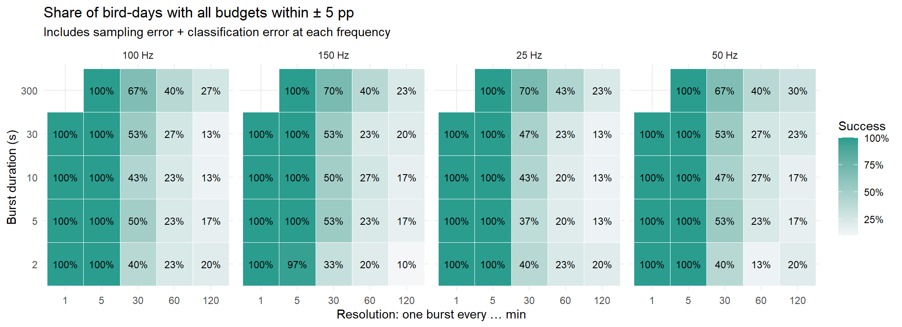
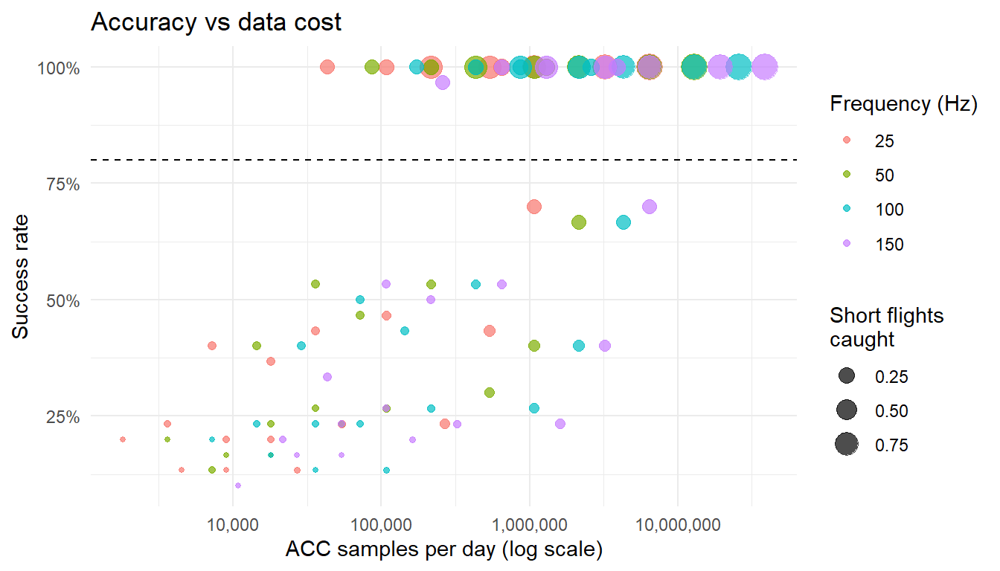

library(tidyverse) # dplyr, tidyr, purrr, ggplot2
library(ranger) # fast random forest
set.seed(42)Accelerometery settings
Packages
Settings to test
Edit these vectors to test other options. Durations longer than the interval are dropped automatically.
wingbeat_hz <- 6 # fastest movement
takeoff_mult <- 1.3 # ASSUMPTION: take-off/climb wingbeat 30% faster
freqs_hz <- c(25, 50, 100, 150) # sampling frequency
durations_s <- c(2, 5, 10, 30, 300) # burst duration
intervals_min <- c(1, 5, 30, 60, 120) # resolution: one burst every X min
window_s <- 2 # classification window (Christensen et al. 2025)
n_days_sim <- 30 # simulated bird-days per setting (raise for final run)Targets used to call a setting “good enough” (edit to your needs).
target_f1 <- 0.85 # F1 score for each behaviour
target_error_pp <- 5 # daily budget within ± 5 percentage points
target_success <- 0.80 # in at least 80% of bird-days ("power")Step 1 — Can the frequency capture a 6 Hz wingbeat?
Rules of thumb: the signal must be below the Nyquist limit (frequency / 2); short-burst movements need 1.4 × the Nyquist rate, and accurate amplitude needs 4 × the signal frequency (Yu et al. 2023).
freq_check <- expand_grid(freq_hz = freqs_hz,
movement = c("Wingbeat (6 Hz)", "Take-off (+30%)")) %>%
mutate(signal_hz = if_else(movement == "Wingbeat (6 Hz)", wingbeat_hz, wingbeat_hz * takeoff_mult),
nyquist_hz = freq_hz / 2,
samples_per_cycle = round(freq_hz / signal_hz, 1),
captured = signal_hz < nyquist_hz,
ok_short_burst = freq_hz >= 2 * signal_hz * 1.4,
ok_amplitude = freq_hz >= 4 * signal_hz)
freq_check# A tibble: 8 × 8
freq_hz movement signal_hz nyquist_hz samples_per_cycle captured
<dbl> <chr> <dbl> <dbl> <dbl> <lgl>
1 25 Wingbeat (6 Hz) 6 12.5 4.2 TRUE
2 25 Take-off (+30%) 7.8 12.5 3.2 TRUE
3 50 Wingbeat (6 Hz) 6 25 8.3 TRUE
4 50 Take-off (+30%) 7.8 25 6.4 TRUE
5 100 Wingbeat (6 Hz) 6 50 16.7 TRUE
6 100 Take-off (+30%) 7.8 50 12.8 TRUE
7 150 Wingbeat (6 Hz) 6 75 25 TRUE
8 150 Take-off (+30%) 7.8 75 19.2 TRUE
# ℹ 2 more variables: ok_short_burst <lgl>, ok_amplitude <lgl>Simple FFT helper: the strongest frequency in a signal.
dominant_freq <- function(x, hz) {
x <- x - mean(x)
n <- length(x)
power <- Mod(fft(x))[2:floor(n / 2)]
freqs <- (1:(floor(n / 2) - 1)) * hz / n
freqs[which.max(power)]
}Recovered frequency of a noisy 6 Hz wingbeat (and its take-off version) in one 2-s window, for each sampling frequency. Values far from the dotted line are aliasing: the tag “sees” a false, slower wingbeat.
recovery <- expand_grid(freq_hz = freqs_hz,
true_hz = c(wingbeat_hz, wingbeat_hz * takeoff_mult),
rep = 1:20) %>%
mutate(est_hz = map2_dbl(freq_hz, true_hz, function(hz, f) {
t <- seq(0, window_s - 1 / hz, by = 1 / hz)
dominant_freq(sin(2 * pi * f * t) + rnorm(length(t), 0, 0.3), hz)
}))
ggplot(recovery, aes(factor(freq_hz), est_hz, colour = factor(true_hz))) +
geom_hline(aes(yintercept = true_hz, colour = factor(true_hz)), linetype = "dotted") +
geom_jitter(width = 0.15, height = 0, alpha = 0.6) +
labs(x = "Sampling frequency (Hz)", y = "Recovered frequency (Hz)",
colour = "True wingbeat (Hz)", title = "Is the wingbeat recovered correctly?") +
theme_minimal()
Step 2 — Classification accuracy per frequency
Simulated ACC signals
Signals are simulated at 100 Hz (“reality”) for three behaviours, with bird-specific values and realistic mess:
- Fly: wingbeat 5–6 Hz; 30% of windows are take-off, landing or gliding (flapping only part of the window).
- Forage: walking ~2 Hz, head-down posture, short peck spikes (~40 ms); 15% of windows are pauses.
- Rest: still; 25% of windows contain preening or shifting.
simulate_window <- function(behaviour, bird, hz = 100, secs = window_s) {
t <- seq(0, secs - 1 / hz, by = 1 / hz)
n <- length(t)
noise <- function(sd) rnorm(n, 0, sd)
pecks <- as.numeric(runif(n) < bird$peck_rate / hz) # peck onsets
pecks <- pmin(1, pecks + lag(pecks, default = 0) + # spikes ~40 ms long
lag(pecks, 2, default = 0) + lag(pecks, 3, default = 0))
if (behaviour == "fly") {
flap <- if (runif(1) < 0.3) as.numeric(t < runif(1, 0.3, 1.7)) else 1
surge <- 0.3 * bird$amp * sin(2 * pi * bird$wing_hz * t + 1) * flap
heave <- 1 + bird$amp * sin(2 * pi * bird$wing_hz * t) * flap
sway <- noise(0.15)
} else if (behaviour == "forage") {
walk <- if (runif(1) < 0.15) 0 else bird$walk_amp
surge <- 0.4 + walk * sin(2 * pi * bird$step_hz * t) + 0.7 * pecks
heave <- 0.9 + walk * sin(2 * pi * bird$step_hz * t + 0.5)
sway <- 0.5 * walk * sin(pi * bird$step_hz * t)
} else {
move <- if (runif(1) < 0.25) 0.25 else 0
surge <- 0.1 + move * sin(2 * pi * 3 * t) + 0.3 * pecks * (move > 0)
heave <- 1 + move * sin(2 * pi * 4 * t)
sway <- move * noise(1)
}
tibble(i = 1:n,
surge = surge + bird$tilt + noise(0.08),
sway = sway + noise(0.08),
heave = heave + noise(0.08))
}Labelled data set: 8 birds × 3 behaviours × 40 windows (80 s per behaviour per bird).
n_birds <- 8
birds <- tibble(bird_id = 1:n_birds,
wing_hz = runif(n_birds, 5, wingbeat_hz), # fastest bird = 6 Hz
amp = rnorm(n_birds, 1, 0.15),
step_hz = runif(n_birds, 1.5, 2.5),
walk_amp = runif(n_birds, 0.10, 0.25),
peck_rate = runif(n_birds, 0.5, 2),
tilt = rnorm(n_birds, 0, 0.15)) # tag position
acc_raw <- expand_grid(bird_id = 1:n_birds,
behaviour = c("forage", "rest", "fly"),
rep = 1:40) %>%
mutate(win_id = row_number(),
data = map2(behaviour, bird_id, ~ simulate_window(.x, birds[.y, ]))) %>%
unnest(data)5% of labels are flipped to mimic annotation errors from video (Christensen et al. 2025).
labels <- acc_raw %>%
distinct(win_id, behaviour) %>%
mutate(label = if_else(runif(n()) < 0.05,
sample(c("forage", "rest", "fly"), n(), replace = TRUE),
behaviour))
acc_raw <- acc_raw %>%
select(-behaviour) %>%
left_join(labels %>% select(win_id, behaviour = label), by = "win_id")Features and classifier
Down-sample to each tested frequency (keep every k-th point), then compute per window: posture (means), movement (SD, VeDBA, max) and dominant frequency.
make_features <- function(raw, hz, raw_hz = 100) {
step <- raw_hz / hz
raw %>%
filter(abs(((i - 1) / step) - round((i - 1) / step)) < 1e-9) %>% # keep every k-th sample
group_by(bird_id, behaviour, win_id) %>%
summarise(mean_surge = mean(surge), mean_heave = mean(heave),
sd_surge = sd(surge), sd_heave = sd(heave), sd_sway = sd(sway),
vedba = mean(sqrt((surge - mean(surge))^2 + (sway - mean(sway))^2 +
(heave - mean(heave))^2)),
max_surge = max(surge),
dom_freq = dominant_freq(heave, hz),
.groups = "drop") %>%
mutate(behaviour = factor(behaviour))
}Leave-one-bird-out validation: train on 7 birds, predict the 8th, repeat for every bird.
loio_predict <- function(feat) {
map_dfr(unique(feat$bird_id), function(b) {
train <- feat %>% filter(bird_id != b) %>% select(-bird_id, -win_id)
test <- feat %>% filter(bird_id == b)
rf <- ranger(behaviour ~ ., data = train, num.trees = 150)
tibble(truth = test$behaviour,
pred = predict(rf, test %>% select(-bird_id, -win_id))$predictions)
})
}Run for every frequency and keep the predictions.
predictions <- tibble(freq_hz = freqs_hz) %>%
mutate(pred = map(freq_hz, ~ make_features(acc_raw, .x) %>% loio_predict())) %>%
unnest(pred)F1 score per behaviour and frequency (plain dplyr).
f1 <- predictions %>%
expand_grid(class = c("forage", "rest", "fly")) %>%
group_by(freq_hz, class) %>%
summarise(tp = sum(truth == class & pred == class),
fp = sum(truth != class & pred == class),
fn = sum(truth == class & pred != class), .groups = "drop") %>%
mutate(f1 = 2 * tp / (2 * tp + fp + fn))
f1 %>% select(freq_hz, class, f1) %>% pivot_wider(names_from = class, values_from = f1)# A tibble: 4 × 4
freq_hz fly forage rest
<dbl> <dbl> <dbl> <dbl>
1 25 0.970 0.963 0.958
2 50 0.970 0.961 0.956
3 100 0.970 0.963 0.958
4 150 0.970 0.963 0.958ggplot(f1, aes(factor(freq_hz), f1, fill = class)) +
geom_col(position = "dodge") +
geom_hline(yintercept = target_f1, linetype = "dashed") +
scale_fill_manual(values = c(forage = "#E76F51", rest = "#457B9D", fly = "#2A9D8F")) +
coord_cartesian(ylim = c(0.5, 1)) +
labs(x = "Sampling frequency (Hz)", y = "F1 score", fill = NULL,
title = "Classification performance per frequency",
subtitle = "Dashed line = target F1. Max ~0.95 because 5% of labels are wrong") +
theme_minimal()
Confusion matrix per frequency (proportion of each true behaviour predicted as each class). Used in Step 3.
confusion <- predictions %>%
count(freq_hz, truth, pred) %>%
group_by(freq_hz, truth) %>%
mutate(prop = n / sum(n)) %>%
ungroup() %>%
mutate(across(c(truth, pred), as.character))Step 3 — Duration × resolution: daily time budget
A simulated bird-day
Behaviour is simulated as a sequence of bouts. Mean bout durations and time shares are assumptions (oystercatcher-like priors).
time_share <- c(forage = 0.35, rest = 0.57, short_fly = 0.05, long_fly = 0.03)
bout_mean_s <- c(forage = 20 * 60, rest = 40 * 60, short_fly = 60, long_fly = 5 * 60)
start_prob <- time_share / bout_mean_s # gives the right long-term time shares
start_prob <- start_prob / sum(start_prob)
simulate_day <- function() {
tibble(behaviour = sample(names(start_prob), 500, replace = TRUE, prob = start_prob)) %>%
mutate(duration = rexp(n(), 1 / bout_mean_s[behaviour]),
start = lag(cumsum(duration), default = 0),
end = pmin(start + duration, 86400)) %>%
filter(start < 86400)
}
days <- map(1:n_days_sim, ~ simulate_day())Short and long flights both become “fly”: a burst cannot tell them apart (GNSS displacement can).
merge_fly <- function(b) if_else(b %in% c("short_fly", "long_fly"), "fly", b)
true_budget <- function(day) {
day %>%
group_by(behaviour = merge_fly(behaviour)) %>%
summarise(true_prop = sum(end - start) / 86400)
}Times (mid-points of 2-s windows) recorded by a schedule.
window_times <- function(duration_s, interval_min) {
starts <- seq(0, 86400 - 1, by = interval_min * 60)
mids <- seq(window_s / 2, duration_s, by = window_s)
as.vector(outer(mids, starts, "+"))
}Classification error: each window’s true behaviour is replaced by a prediction drawn from the confusion matrix of that frequency.
misclassify <- function(truth, conf) {
pred <- truth
for (cl in unique(truth)) {
row <- conf %>% filter(truth == cl)
idx <- which(truth == cl)
pred[idx] <- sample(row$pred, length(idx), replace = TRUE, prob = row$prop)
}
pred
}One setting on one day: estimated budget vs true budget, and share of short flights caught by at least one window.
score_setting <- function(day, freq_hz, duration_s, interval_min) {
times <- window_times(duration_s, interval_min)
idx <- findInterval(times, day$start)
obs <- merge_fly(day$behaviour[idx])
pred <- misclassify(obs, confusion %>% filter(freq_hz == !!freq_hz))
short <- which(day$behaviour == "short_fly")
caught <- mean(short %in% idx)
tibble(behaviour = pred) %>%
count(behaviour) %>%
mutate(est_prop = n / sum(n)) %>%
right_join(true_budget(day), by = "behaviour") %>%
mutate(est_prop = replace_na(est_prop, 0),
error_pp = (est_prop - true_prop) * 100,
short_fly_caught = caught)
}Run the grid
All combinations of frequency × duration × resolution (durations longer than the interval are removed).
grid <- expand_grid(freq_hz = freqs_hz, duration_s = durations_s, interval_min = intervals_min) %>%
filter(duration_s <= interval_min * 60)
nrow(grid)[1] 96results <- grid %>%
mutate(res = pmap(list(freq_hz, duration_s, interval_min), function(f, d, i) {
map_dfr(seq_along(days), ~ score_setting(days[[.x]], f, d, i) %>% mutate(day = .x))
})) %>%
unnest(res)Summaries
Per setting: RMSE (typical daily error, ± pp), bias (systematic error from misclassification), success = share of bird-days with all three behaviours within the target error (our “power”), and short flights caught.
setting_sum <- results %>%
group_by(freq_hz, duration_s, interval_min, day) %>%
summarise(all_ok = all(abs(error_pp) <= target_error_pp),
caught = first(short_fly_caught), .groups = "drop") %>%
group_by(freq_hz, duration_s, interval_min) %>%
summarise(success = mean(all_ok),
short_fly_caught = mean(caught, na.rm = TRUE), .groups = "drop") %>%
left_join(results %>%
group_by(freq_hz, duration_s, interval_min) %>%
summarise(rmse_pp = sqrt(mean(error_pp^2)), .groups = "drop"),
by = c("freq_hz", "duration_s", "interval_min"))Data cost: ACC samples per day (3 axes). Use it as a proxy for battery and storage.
setting_sum <- setting_sum %>%
mutate(acc_s_per_day = duration_s * 1440 / interval_min,
samples_per_day = acc_s_per_day * freq_hz * 3,
duty_cycle = acc_s_per_day / 86400)Heat map: success rate (“power”) for each duration × resolution, one panel per frequency.
ggplot(setting_sum, aes(factor(interval_min), factor(duration_s), fill = success)) +
geom_tile(colour = "white") +
geom_text(aes(label = scales::percent(success, 1)), size = 3) +
facet_wrap(~ paste(freq_hz, "Hz"), nrow = 1) +
scale_fill_gradient(low = "#F4F6F8", high = "#2A9D8F", labels = scales::percent) +
labs(x = "Resolution: one burst every … min", y = "Burst duration (s)", fill = "Success",
title = "Share of bird-days with all budgets within ± 5 pp",
subtitle = "Includes sampling error + classification error at each frequency") +
theme_minimal()
Accuracy vs cost: every point is a setting. The best settings sit at the top-left (high success, little data).
ggplot(setting_sum, aes(samples_per_day, success, colour = factor(freq_hz))) +
geom_point(aes(size = short_fly_caught), alpha = 0.7) +
geom_hline(yintercept = target_success, linetype = "dashed") +
scale_x_log10(labels = scales::comma) +
scale_y_continuous(labels = scales::percent) +
labs(x = "ACC samples per day (log scale)", y = "Success rate",
colour = "Frequency (Hz)", size = "Short flights\ncaught",
title = "Accuracy vs data cost") +
theme_minimal()
Best settings
Settings that meet all targets, cheapest first. A frequency qualifies only if (i) every behaviour reaches the F1 target in Step 2 and (ii) it passes the Step 1 rules for both the wingbeat and the take-off (captured and ≥ 1.4 × Nyquist). Rule (ii) matters: low frequencies can still classify 3 behaviours from posture and VeDBA, but they alias the wingbeat, so wingbeat frequency and flight effort cannot be measured.
ok_signal <- freq_check %>% group_by(freq_hz) %>%
summarise(ok = all(captured & ok_short_burst)) %>% filter(ok) %>% pull(freq_hz)
ok_f1 <- f1 %>% group_by(freq_hz) %>% summarise(ok = all(f1 >= target_f1)) %>%
filter(ok) %>% pull(freq_hz)
ok_freqs <- intersect(ok_signal, ok_f1)
ok_freqs[1] 25 50 100 150setting_sum %>%
filter(freq_hz %in% ok_freqs, success >= target_success) %>%
arrange(samples_per_day) %>%
mutate(setting = paste0(duration_s, " s every ", interval_min, " min at ", freq_hz, " Hz")) %>%
select(setting, success, rmse_pp, short_fly_caught, duty_cycle, samples_per_day) %>%
head(10)# A tibble: 10 × 6
setting success rmse_pp short_fly_caught duty_cycle samples_per_day
<chr> <dbl> <dbl> <dbl> <dbl> <dbl>
1 2 s every 5 min … 1 1.61 0.209 0.00667 43200
2 2 s every 5 min … 1 1.57 0.209 0.00667 86400
3 5 s every 5 min … 1 1.67 0.221 0.0167 108000
4 2 s every 5 min … 1 1.52 0.209 0.00667 172800
5 2 s every 1 min … 1 1.37 0.650 0.0333 216000
6 10 s every 5 min… 1 1.60 0.236 0.0333 216000
7 5 s every 5 min … 1 1.63 0.221 0.0167 216000
8 2 s every 5 min … 0.967 1.76 0.209 0.00667 259200
9 2 s every 1 min … 1 1.34 0.650 0.0333 432000
10 10 s every 5 min… 1 1.55 0.236 0.0333 432000Your example setting (30 s every 60 s at 25 Hz) for comparison. Note that a 3-s burst holds only one 2-s window; prefer ≥ 10 s if you want several windows per burst for a majority vote.
setting_sum %>% filter(freq_hz == 25, duration_s == 30, interval_min == 1)# A tibble: 1 × 9
freq_hz duration_s interval_min success short_fly_caught rmse_pp acc_s_per_day
<dbl> <dbl> <dbl> <dbl> <dbl> <dbl> <dbl>
1 25 30 1 1 0.879 1.31 43200
# ℹ 2 more variables: samples_per_day <dbl>, duty_cycle <dbl>
Note
How to read this
- Frequency is decided by Steps 1–2: it must sit clearly above twice the fastest movement (6 Hz → > 12 Hz). 25 Hz gives ~4 samples per wingbeat and meets the amplitude rule.
- Duration × resolution is decided by Step 3: many short bursts beat a few long ones for daily budgets, because bouts are long and autocorrelated.
- Rare, brief behaviours (short flights) need dense sampling; check the short flights caught column.
- Classification errors cause bias that more data cannot remove: correct it with the confusion matrix from Phase 1 video.
- Signals here are clean and invented, so absolute scores are optimistic. Re-run with real labelled windows.